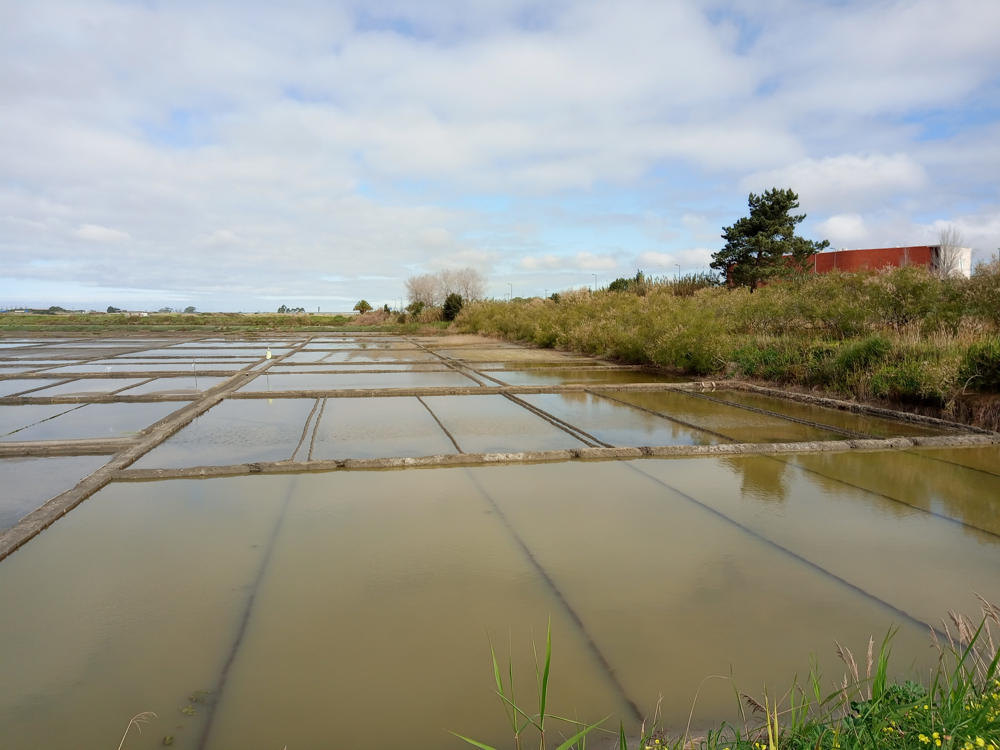
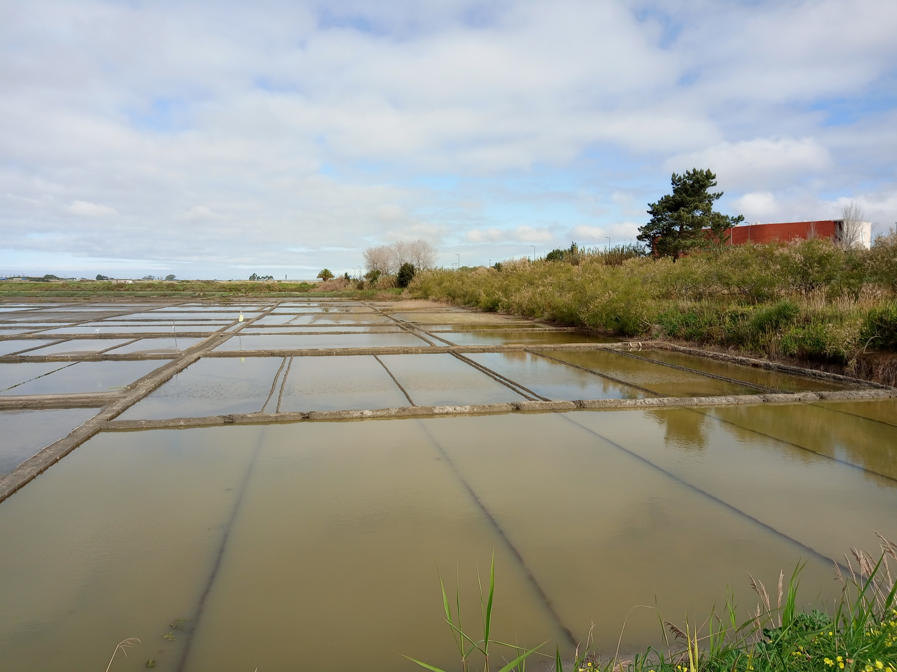
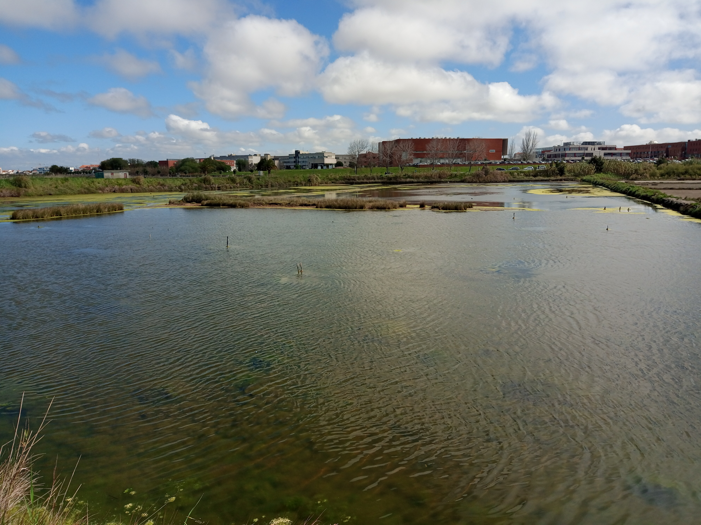
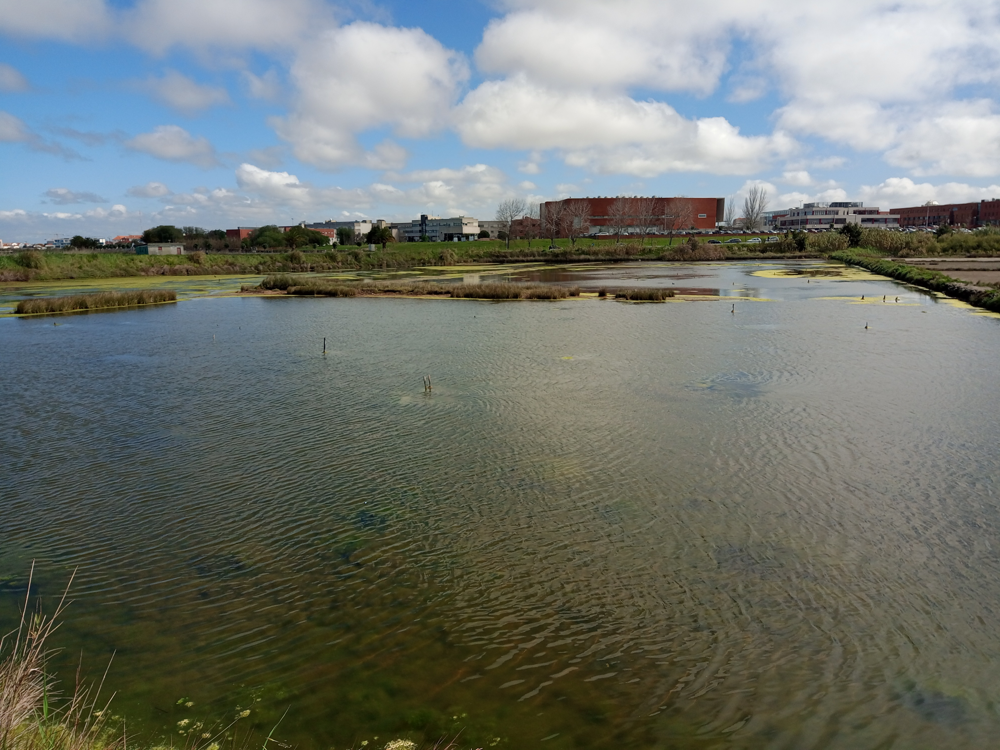
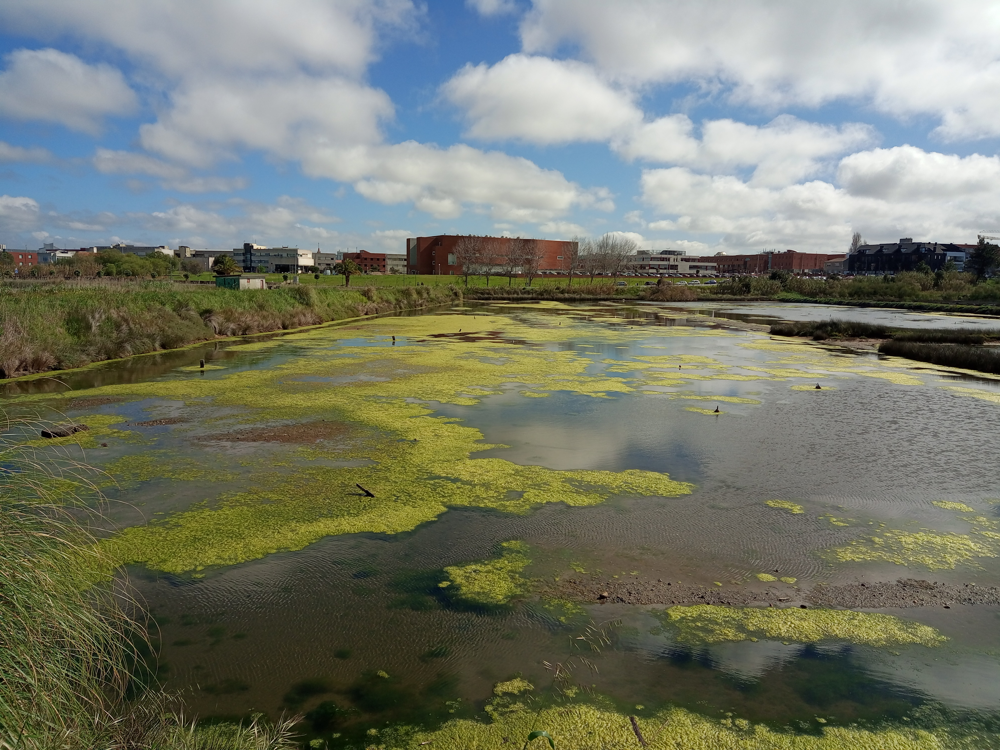
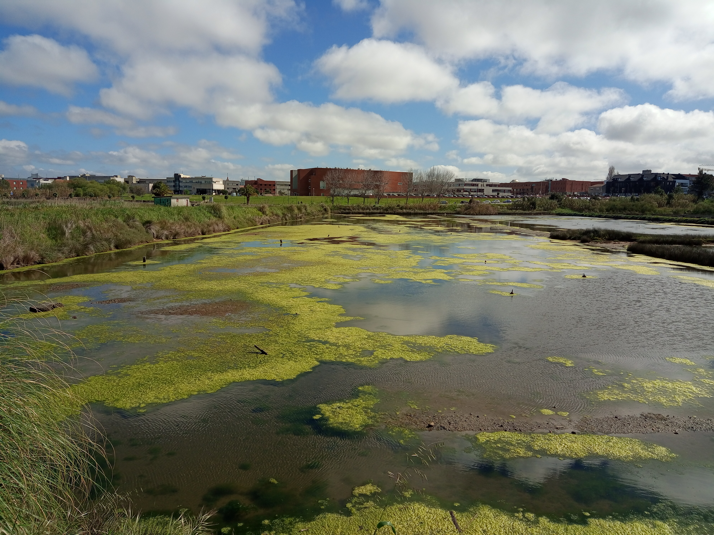

A Ria de Aveiro é reconhecida como uma das maiores, mais expressivas e biologicamente mais significativas zonas húmidas litorais de Portugal. Além de ser uma paisagem única, esta área desempenha um papel crucial em várias atividades, como plataforma portuária, pesca, salinas, aquacultura, agricultura, desporto, turismo e proteção da natureza (Abreu, Correia & Oliveira, 2004; CCDRC, 2011). Designada como Zona de Proteção Especial, sob a Diretiva Aves, e integrando o Plano Sectorial da Rede Natura 2000 de Portugal, a região destaca-se pela sua importância na conservação da avifauna aquática (ICNF, 2014).
Ao longo de séculos, a economia local na área da Ria de Aveiro baseou-se na exploração dos seus recursos naturais. As populações locais, fortemente ligadas ao ecossistema, exploraram peixes, algas, bivalves, crustáceos, bem como as suas capacidades de tráfego lagunar, agricultura e exploração de sal (Sarmento, 2005).
A Marinha de Santiago da Fonte destaca-se como a única das cinco salinas pertencentes à Universidade de Aveiro que foi alvo de um processo de recuperação bem-sucedido. É, igualmente, uma das nove salinas existentes na Ria de Aveiro que continua a produzir sal utilizando métodos exclusivamente artesanais, conforme dados de 2016. A gestão deste espaço, onde os marnotos (salineiros) desempenham um papel fundamental, foi formalizada através de um contrato de arrendamento, sendo a responsabilidade pela venda do produto atribuída a estes trabalhadores.
Ao longo do tempo, a Marinha de Santiago da Fonte tem sido alvo de iniciativas de reabilitação, impulsionadas por projetos europeus como o Sal do Atlântico e o Ecosal Atlantis. Estes projetos contribuíram não apenas para a conservação do espaço, mas também possibilitaram a diversificação das atividades desenvolvidas na marinha. Para além da produção de sal, foram introduzidas atividades complementares, como interpretação e educação ambiental, bem como investigação científica. Este local tornou-se, assim, um laboratório natural propício ao desenvolvimento de projetos de investigação multidisciplinares nas áreas de ambiente, ordenamento, biologia, geociências, química, turismo, entre outras.
No contexto do Projeto Ecosal Atlantis, implementado entre 2010 e 2013, foi estabelecida a rota "Sal Tradicional Rota do Atlântico", que engloba diversas salinas tradicionais do Atlântico, incluindo a Marinha Santiago da Fonte, como documentado por Martins et al.
Um dos traços distintivos da Marinha de Santiago da Fonte é a presença de um Armazém diretamente na salina. Esta particularidade remonta ao passado, quando a marinha era utilizada como estrutura de apoio aos campos agrícolas circundantes, servindo para armazenar o pilado. O pilado refere-se a caranguejos comuns, como o Polybius henslowi, que, quando em decomposição, eram utilizados como adubo na agricultura, conforme detalhado por Martins et al. (2017).
O espaço tem sido alvo de intervenções físicas, como a recuperação do armazém, estruturas de apoio à produção, observatório de aves, passadiço e melhorias de acesso. Estas intervenções foram concretizadas no âmbito de projetos europeus de cooperação territorial. Em 2012, o armazém foi reabilitado, tendo sido considerados os aspectos históricos e ambientais. Para esta reabilitação, recorreu-se a técnicas tradicionais de construção de palheiros do litoral, sendo a intervenção realizada por uma pessoa especializada na construção destes edifícios com métodos tradicionais. O armazém foi pintado com tinta ecológica avermelhada, obtendo uma tonalidade semelhante à original, utilizando óleo de peixe queimado, de acordo com as práticas históricas da região (Martins et al., 2017).

 

 

 
